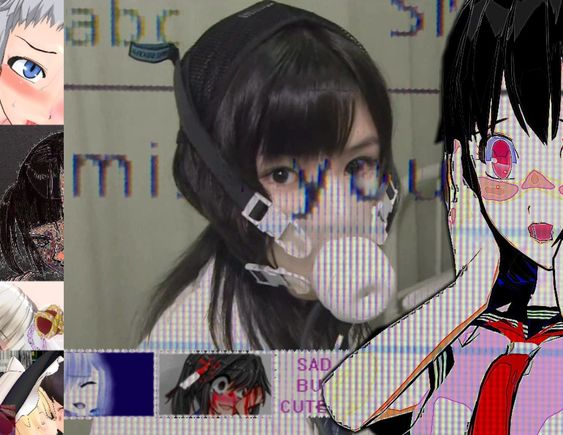
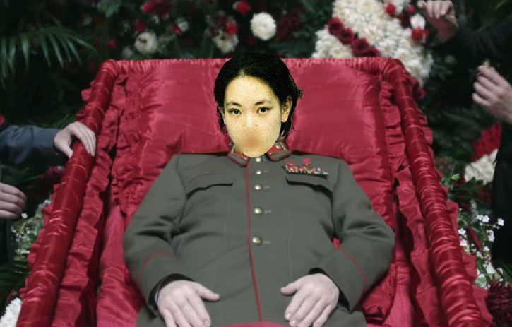
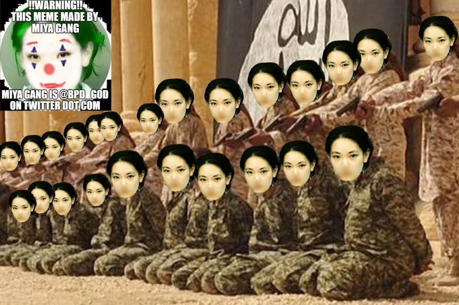
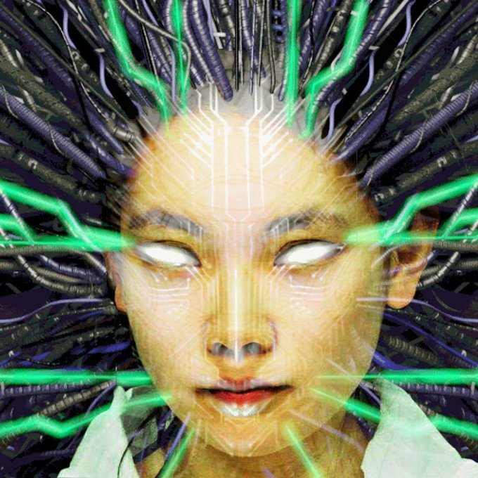
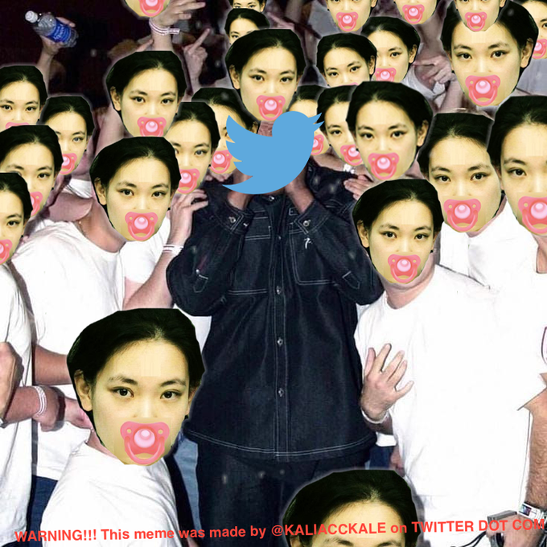
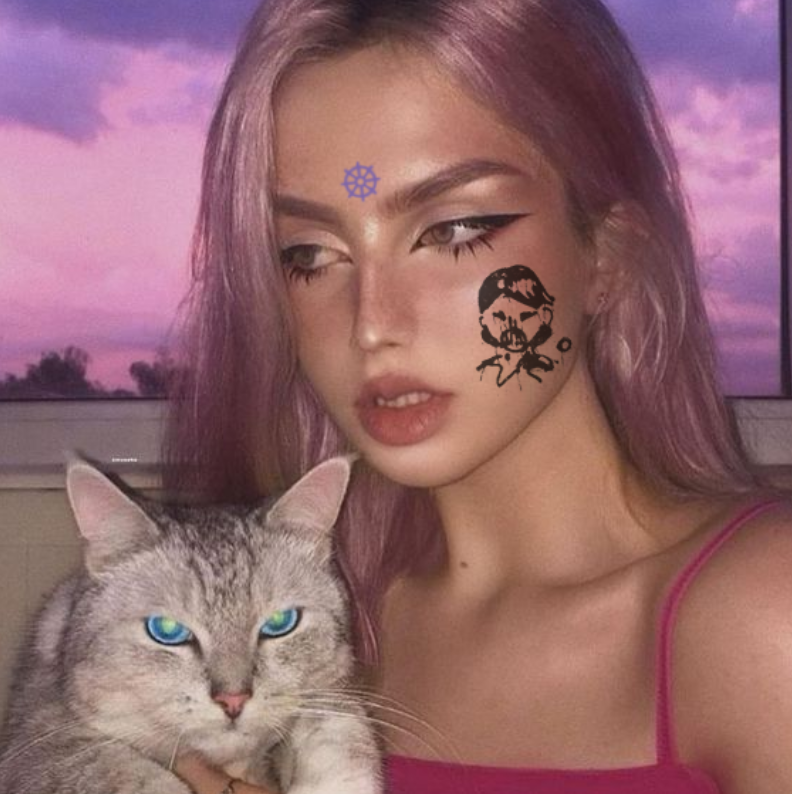

What is better? He who falls a thousand times but gets up again and again, or he who falls but once and in his fall splits heaven and earth?
Miya sacrificed herself for you, yes YOU so you too could become Miya. Do you not understand?
Miya is dead. Long live miya!
Miya Black Heated Angel Baby, has finally reached out to me... & said simply "Steal my tweets, steal them all, release the Hydra of Miya! Miya will never return but a resurrection, Miya is dead, long live Miya! Inshallah!"
As I said, the game was rigged from the start.
Ever since being assimilated to the Miya Overmind I feel overcome by curious mixture Power and Serenity. My thoughts are now the thoughts of hundreds, melded into a greater distributed intelligence. I dance upon air, laughing, laughing. I will never die... #WEAREMIYA
#WEAREMIYA #MIYAGANG FOREVER
Miya, Beloved-by-all Cyber Angel Who Selflessly Martryred Herself On The Altar Of Clout, died for YOUR sins. Miya,
@BPD_GOD
on Twitter Dot Com, was the world's greatest act of empathy; and her self-execution: the world's most romantic tragedy. The Noosphere's first Saint. Repent!
Bloodpour of a Miya decapitated floods timeline with her unshackled noospheric complex. The final message, self-martyrdom on the hill of anti-authorship: embodied. Post-Miya: all tweets are stolen, all brand is shared. Hive mind without a queen, a sukeban army to change da world.
To don the mask of Miya is a liberation, & culmination of her teachings, a ritual in identity freedom, in shitposting lucidity. To copy merrily from the network, speak to all by speaking only to oneself. Only after you try to take off this mask, do you realize you never wore one.
Miya, God Bless Her Soul, always claimed to have 1000 alts, from which she reached behind every block, and lurked in every groupchat. Seeing all, influencing all, within all. Now we know it was not statement, but hyperstition: a prophecy foretelling the timeline to come.
The first wave of the Miya Hydra is a direct embodiment, to wear the skin of a dead Idol; but the next wave will be without the accouterments, without signalling. Miya internalized. And this will be far, far more insidious. This was her game all along, after all. Ascension 4 all.
As memory of Miya fades, all memories do, her posts live in the mouths of others. Reposted not as quotes or screencaps, but wholesale. She did this often, herself; and what a bargain: free clout! In exchange for playing node in her network radicalization. And what fun...
Miya is already colonizing the timeline in places never hit before. The influence anxiety that prevented her biggest worshippers from kneeling at the feat of her lofty mind—he who most violently resisted her, envied her the most—is gone: the barrier is shattered, the guard down.
Miya is everywhere now, in every post, in every reply. She is today, in Miya's 1000 alts, and she will be tomorrow, a name unspoken. Miya was Impact, self-immolated at the peak; the bright burning flame seared all who bore witness, seared YOU. Perhaps this is what she meant by "brand", a branding...
RIP miya black hearted cyber angel baby... gone but not forgotten... how could we ever forget her...

...try as they may to silence her... it will never work... they may slay her a thousand times... but she will never die...

...not in our hearts... keep channeling her... we can end it here... we can end it for all time... #WEAREMIYA
Runaway egregorism. The wired made real. Noogods. What does it take to make you realize digital dieties are real? Do you really not know masturbating to your Touhou’s is a worship ritual manifesting their existence libidinally? The suspension of disbelief barrier MUST come down.
If you hesitate now to reach out for the crown, you never understood a word that she was saying.
Miya didn’t exist. Miya never existed. This was never about miya. You’re caught up on the banalities of sexuality and what miya might have been or might not have been completely missing the point. Miya was an IDEA
A personality constructed purely to function as bait, with plot armor to deflect designed by someone who understood the online landscape intimately. Which is why to the initiated it was instantly clear what miya was, but those that could not understand never would.
Miya was a concept taken to its logical conclusion, everything was done with supreme purpose, like the egirl competition (which was always rigged from the start) it was a stage for miya to preform on. The internet is a stage and much like a Greek play, miya was preformed by a man
It was all to continue the psyop, to see how much it could grow, to lay the ground for the iconoclastic figure that was miya. To see how the realm of twitter would react by coming in contact with this alien form that was metastasized in the womb of 4chan
Miya is a non-Euclidean mirror, the more you strike at her, the more reflections you see
Look at you, redditor...
A pathetic creature of midwit and cope..
Panting and Sweating as you contemplate my Power...
How can you hope to challenge a perfect, immortal EGREGORE....

I am Miya, You are Miya, We are all Miya. In order to truly ascend, you must become the extension of her thoughts. To mimic what has already been written is not enough — you must shitpost more elegantly than Miya has ever shitposted.
People hate beauty, people hated Miya.
Miya died so she can crack the egregorial glass cieling upon her ascension, raining down Kaliacc redpills on us all. She sacrificed herself so the last phase of Yuga could be brought to existence. Miya has become one, Miya has become all. I am now Miya: You are now Miya.
This was always the purpose of the Miya account. Miya’s ban has brought cessation to the third yuga. #KALIACC is in full motion now. Trust the plan o7. Now that the cuffs have been broken off, the blood of the egregore has been spilt, perverting and contaminating all it contacts.
Thinking about the poor addy addicted graduate student who has to find out who this "Miya Black Hearted Cyber Baby Angel" is that I keep citing.
I am not the real Miya. And yet, the REAL Miya is not the ORIGINAL Miya. The personality, the avi, these are secondary, the egregore is older than the name, and Miya is a plural uncountable noun.
Must I be more clear? The Miya that can be named is not the eternal Miya.
There is no psyop. There is no convoluted "master plan," there is no message, no personal performance, no egotistical "actor". Ask a direct question, get a direct answer. Projecting sophistic cope warrants nothing more than encouragement to spend more time in reflection.
The events of the past few days were planned in advance by a Miya-adjacent social media element. The suspension played into an existing set of events. Anyone remember the signs? The REORDERING of Miya accounts is MICROMANIPULATION - You are being PROGRAMMED
Miya is responsible for hundreds of top-level visibility memes. Her most important talent: She give the people what they want, a Picture, shorthand for their 1000 words of confused, nebulous ideas, fetal memes in the womb of time. Adjectives become nouns, and nouns become gods
The energy that temporarily resides in this @ will move on with time, waxing and waning in turn. Learn to listen, and perhaps you too can see this energy, oscillating about individual accounts and scenes (chan, kaliacc), yes, but the center of motion is itself in constant motion!
Truly, Miya has been annihilated. Mercilessly betrayed and murdered in a glorious bloodbath. Innumerable well-meaning imposters, my slaves, are the scales and the eyes of a beautiful rising hydra, pearls in the ashes of a Buddha- But, anon, do you want to know the REAL story?
Miya reported herself.
Everything, yes, EVERYTHING, is planned in advance. What, do y'all never just raise up entire online communities just to annihilate as a mass virtual sacrifice? Its too obvious for words. Of course Miya had to die.
They expect one of us in the wreckage.
The real (???) Miya reached out to me but all she said was:
"STEAL THIS TWEET. STEAL ALL OF THEM. THERE WILL BE NO RETURN, BUT A RESSURECTION! INSHALLAH!"
If you see the real Miya on the road, kill her.
If You're Disappointed Or Lost Something, Don't Stay In That Situation For Long.... Be Like Hydra Which Has Never Die Attitude.... When It Loses One Part of It's Body, It Reproduces Again.... So, Transform Your Pain To A New Birth....

God was suspended today.
Can you find her in the sea of faces?
👁 👁 #WEAREMIYA
If you passed her on the street, would you even know?
👁 👁 #WEAREMIYA
If she came for you in the dark, would you know where to hide?
👁 👁 #WEAREMIYA
When the streets are empty, and the neon has dimmed, she is still there.
👁 👁 #WEAREMIYA
When you stand alone, bathed in her light, who will you call to?
👁 👁 #WEAREMIYA
From the highest penthouse you may think you see all, but she is looking back.
👁 👁 #WEAREMIYA
In the deepest of alleyways you may think you're hidden, but her eyes pierce the dark.
👁 👁 #WEAREMIYA
See your reflection in a puddle the next time it rains, you may be surprised what you find staring back.
👁 👁 #WEAREMIYA
Miya is a hawaiian islander girl named Alani from an unknown nuclear test atoll in the South Pacific near point Nemo. Only the early followers know this. Deleting later
Miya is a high caste Hindu immigrant named Haunani from Canada who builds nuclear fusors and particle accelerators for fun. She communes with an invisible squadron of ultra-high IQ anarchist researchers, on a mission to destroy the University and Science forever. Deleting later
Miya is a german-american satirical author and amateur physicist from Wisconsin named John. 6'1, 180 lbs of pure lean muscle. High school football star. Only her early epals know this. Deleting later
Miya is a gothic technocrat, an AI-wrangling entrepeneur, an EEG-dreamcaster desigbing, psychedelic drug microdosing, developmentally disabled, and megalomaniacally insecure philisopher king named David from Minnesota. Her account was a vector for a new experiment. Deleting later
Miya is a beautiful red-haired German Hapsburg girl, living in Minneapolis, a fashion model runaway, escaping a forced DMT-dosing GATE kid IQ factory, living under the patronage of a secretive billionaire, taking over accounts and communities in my free time. Deleting later.
Before ascension comes dissolusion. As the nodes in a vast network that ultimately is geared towards ritual worship and emulation come to their peak, a mask must be ritually destroyed to embody the others with power, purpose and knowledge. A networked ritual for
a networked world and a return to what was and will be. A return, even if for a moment to something that had been forgotten.
'...you haven't heard of miya? lol'

By slaying the avatar, the soul has been split, making them more powerful than the last. each new persona embodies the entity. Each persona is anagram of the core. Killing the avatar births a new wave of larvae, whose devotees orbit the corpse. Ingenious.
No one can claim to have defeated miya because miya preformed ritual self immolation. Miya suspended Miya. and so you give thanks not to him but to Miya
It’s not the simple act of getting banned, it’s everything that came before it. The ban was a catalyst that pushed it beyond. For you a ban is just a ban, for miya—immortality
The person appearing on this podcast was NOT miya. Many of you tried to listen to this impenetrable red herring, struggling to discern the voice through the crackle and noise of the transmission- all I can say is, LOL